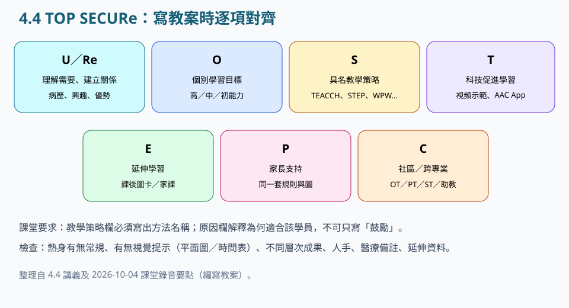
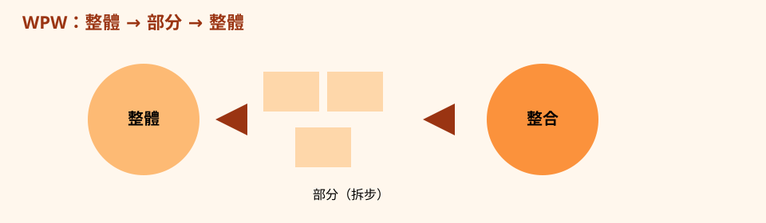
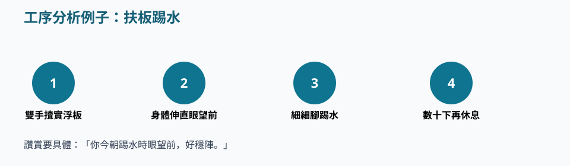
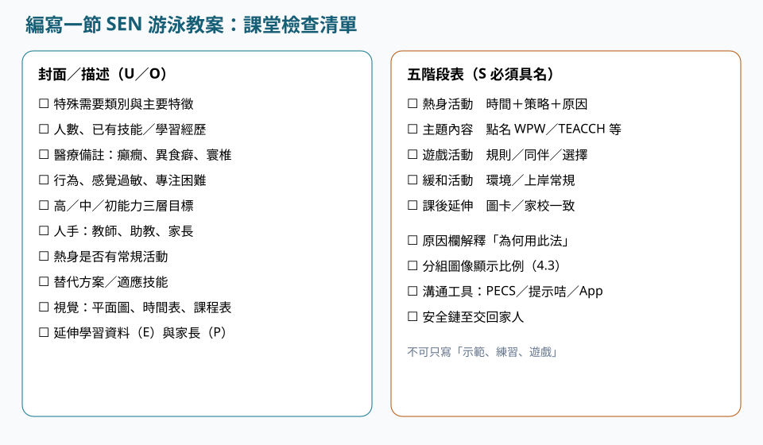

視覺結構貫穿五階段。
實務 · 4.4
特殊需要人士游泳教學法
請依序研讀導讀、重點與池邊準則，聽粵語說明，再以練習核對理解。
本網站根據課程講義、課堂分享與溝通工具筆記整理，供未能出席面授的學員系統研讀。不能代替醫療診斷、法律意見、課堂實習或面授扶抱示範。涉及健康、用藥、脊柱或癲癇等情況，須按家長／醫護文件執行。
單元導讀
作業須寫五階段：熱身、主題、遊戲、緩和、課後延伸。每一格策略欄具名 TEACCH、STEP、WPW 等方法；原因欄解釋為何適合該學員。此為編寫作業的關鍵單元。
研讀次序：重點 → 粵語說明 → 本單元練習 → 下一單元「特殊需要人士體適能測試及相關運動研究」。
學完應能掌握
- 須以 TOP SECURe 編寫一節含熱身、主題、遊戲、緩和、課後延伸的五階段教案。
- 每一格策略欄須具名 TEACCH、STEP、WPW 等方法；原因欄解釋為何適合該學員。
- 同一份教案須把 AAC、視覺提示、人手與醫療備註一併寫入。
重點


五階段教案的寫法
講義出處：4.4 特殊需要人士游泳教學法 · 五階段教案的寫法
課堂情境
策略欄只寫「示範、練習、遊戲」，評改不合格。
教學原則
作業要求描述所選 SEN 類別，並編一節含熱身、主題、遊戲、緩和、課後延伸的課；每一格都要列明所用教學策略並解釋原因。評改看你有沒有點名方法：TEACCH、STEP、整體－部分－整體、視頻示範、視覺提示、提供選擇、分散的維護任務、合理的強化、同伴輔導、修改教學／規則／設備／環境。
池邊執行
每階段至少寫一個全名策略加一句「因為該學員……」。評改檢視是否具名方法。
TOP SECURe
講義出處：4.4 特殊需要人士游泳教學法 · TOP SECURe
課堂情境
教案有活動無理解、無家長對齊。
教學原則
U／Re 理解特殊需求並建立關係（病歷、溝通、優勢、興趣）；O 個別目標，分高中初能力，可寫基線、短期／長期成果與學習路徑，並與 OT／PT／ST／家長協作；S 實施多樣化策略（必須具名）；T 科技，如視頻示範、匡智溝通易、GoTalk NOW；E 延伸學習資料；P 家長同一套規則與圖卡；C 社區與跨專業。
池邊執行
寫完用此框架逐項自檢封面。

S 策略清單（必須出現在策略欄）
講義出處：4.4 特殊需要人士游泳教學法 · S 策略清單（必須出現在策略欄）
課堂情境
遊戲環節中特殊需要學員被排除在外。
教學原則
整體－部分－整體 WPW；多種感官；視頻示範 VM；TEACCH（視覺安排、常規、環境、時間表、個人工作系統）；視覺提示 VC；提供選擇 PC；分散的維護任務；合理的強化；同伴輔導；STEP（調空間、任務、設備、人員）；以及修改教學 DI、規則 MRu、設備 MEq、環境 MEn。



封面檢查問題
講義出處：4.4 特殊需要人士游泳教學法 · 封面檢查問題
課堂情境
封面無醫療備註，現場才發現癲癇或寰樞椎不穩。
教學原則
寫類別與人數、之前學習經歷、熱身有無常規、有無替代／適應技能、有無平面圖時間表課程表、不同層次學習成果、人手（教練／助教／父母）、感覺過敏或無法集中的備註、醫療（癲癇、異食癖、寰椎不穩定、行為）。
池邊執行
開課前用這張清單逐項剔。

心理安全與換氣
講義出處：4.4 特殊需要人士游泳教學法 · 心理安全與換氣
課堂情境
以驚嚇克服恐懼，或一次同時教授划手、踢水與換氣。
教學原則
怕水先設計環境：淺、可站、有牆、可選擇離開；初期用口吸氣、水中吐氣；頭部分拆再開全身（WPW）；遊戲服務於目標，每課一個個人任務，讓進度可見。
池邊執行
讓學員看見較上週多完成的具體次數，不宜使用驚嚇。
S 策略必須具名
講義出處：4.4 特殊需要人士游泳教學法 · S 策略必須具名
課堂情境
教案只寫「示範、練習、遊戲」。
池邊執行
評改檢視策略欄是否具名方法。
肢體協助倫理
講義出處：4.4 特殊需要人士游泳教學法 · 肢體協助倫理
課堂情境
教師從後突然托頭。
教學原則
先告訴學員將要觸碰；記錄地點程度時間；進步後減至輕觸。
池邊執行
與保護兒童最小觸碰一致，拒絕即改方法。
TOP SECUReSTEPWPWUDL／UDfPEBaL／SO／LO／LP
池邊準則：做到／避免
做到
- 策略欄寫方法全名，原因欄寫為何用。
- 三層目標對應修改後的教學重點，溝通工具與提示咭寫進用具。
- 讓學員見到比上週多完成的具體次數。
避免
- 用驚嚇克服恐懼。
- 一次教划手踢水換氣。
- 策略欄留空或只寫鼓勵，忽略醫療備註與視覺提示。
讀完先核對
三題判斷：下列做法是否符合本單元池邊準則。
作業交前核對
對齊 4.4 TOP SECURe 與官方五階段表。勾選後本機記住，提交前再逐項覆核。
何時用 TEACCH，何時用 STEP
作業須指定主導原則。兩者可並用，但封面應寫明以哪一項貫穿全課。
TEACCH
學員因未知而焦慮、依賴視覺、需要看見開始與完成時使用。核心是視覺安排、常規、環境界線、程序時間表與個人工作系統。教案須寫固定水線、結束儀式與工作系統方向（由左至右或由上而下）。
STEP
同一技能要調校難度時使用：Space 空間（淺水、遠離跳台）、Task 任務（短循環、拆步）、Equipment 設備（浮條、計時器、圖卡）、People 人員（比例、面對面）。原因欄須寫「因為該學員……所以調哪一項」。
詞彙
- TOP SECURe
- 4.4 框架：理解與關係、目標、策略、科技、延伸、家長、社區。
- STEP
- 調整 Space 空間、Task 任務、Equipment 設備、People 人員。
- WPW
- 整體－部分－整體：先看完整動作，再拆部件，最後整合。
- UDL／UDfPE
- 體育普遍設計，預先讓更多人參與。
- BaL／SO／LO／LP
- 基線、短期成果、長期成果、學習路徑（4.4 O）。
粵語講稿（可邊聽邊看）
以下與本頁錄音同一份講稿。建議先讀重點，再聽說明，把判斷次序聽清楚。
各位同學，編教案，最緊要係寫明你用咗咩技巧。熱身、主題、遊戲、緩和、課後，每一格都要寫低策略嘅全名同埋點解咁做；淨係寫「示範、練習、遊戲」，會唔合格。用 TOP SECURe 自己做檢查：U 同 Re 係理解同關係；O 係個別嘅三層目標；S 係具名策略；T 係科技，例如視頻、匡智溝通易或者 GoTalk NOW；E 係延伸；P 係家長同一套圖；C 係社區同跨專業。策略可以點名：TEACCH、STEP 調空間任務設備人員、WPW 拆換氣、視覺提示、提供選擇、合理強化、同伴輔導，同埋修改教學規則、設備同環境。封面要有類別、人數、學員經歷、常規、平面圖、時間表、人手、感覺需要，同埋醫療備註，例如癲癇、異食癖、寰椎唔穩。如果佢怕水，就設計成淺水、企得穩、有牆、可以離開；唔好用嘢嚇佢，亦唔好一次過就教晒划手、踢水同換氣。